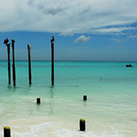
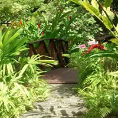
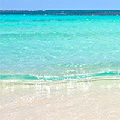
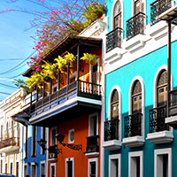
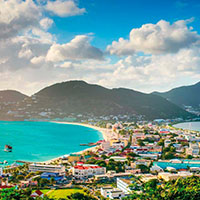
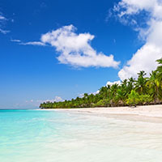
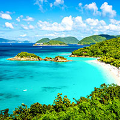

Take a look at just a few of the breathtaking destinations the Caribbean has to offer!

~~~ Aruba ~~~
Our white-sand beaches, cooling trade winds and warm, friendly people are just a few reasons why so many people return to Aruba year after year. Choose a spotlight below to begin discovering everything that makes us One happy island.

~~~ Barbados ~~~
Beaches aren’t the only cure for the winter blues, and Barbados offers sun-seekers spectacular scenery, a thrilling local culinary scene, and a cultural calendar crammed with music festivals and more!

~~~ Culebra ~~~
Culebra offers beaches that are easily accessible yet give visitors an relaxing, peaceful off the grid island experience. If you manage to pull yourself off Flamenco Beach, you’ll find more amazing beaches with such beauty that will leave you breathless.

~~~ Old San Juan ~~~
Old San Juan, the most popular cruise destination in the Caribbean, is far from a cookie cutter vacation spot. Old San Juan is special in every way, known for it’s rich history, five century old forts, romantic ambiance, Old World elegance, exquisite food, and festive atmosphere.
~~~ Punta Cana ~~~
Punta Cana is the land of rest and relaxation. Where the Atlantic meets the Caribbean, large resorts offer all the comforts of modern living right on the beach. Punta Cana is a golfer’s destination, with 11 courses located all along the strip.

~~~ San Martín ~~~
Much more than a beach-lover’s paradise, the island of Saint Martin is teeming with natural, cultural and human riches. Thanks to its climate and untouched natural heritage, the island offers unparalleled year-round watersports and outdoor activities.

~~~ Saona ~~~
The visit to Saona Island is the excursion that everyone recommends when they know that you are visiting the Dominican Republic, it really is a heaven on earth, almost idyllic for its landscapes and the transparency of its waters. It is the largest of the Dominican Republic's islands.

~~~US Virgin Islands~~~
These laidback islands offer fine dining, turquoise waters and quaint towns. On St. Croix, colorful buildings provide a lovely backdrop for dining or sailing. On St. Thomas, shopping mecca Charlotte Amalie has hopping nightlife. Tranquil St. John offers quiet trails and secluded coves.